| HCII / HCI International 2026 | 2026/07/26–07/31
Montreal, Canada開催日・開催地：公式確認済
現地日付・America/Toronto | Regular Papers 2025/10/24；Posters 2026/01/26；Late Breaking Work 2026/03/30・最終2026/06/12資料記載・未再確認 | 公式サイト確認：2026/09/18
開催日・開催地 |
|---|
| RO-MAN 2026 | 2026/8/24-8/28
北九州資料記載・未再確認
開催地の現地日付（TZ未確認） | Regular / Special Session Paper：2026/03/29（延長後）；LBR：2026/06/12。時刻・TZ未確認上記日付：公式確認済 | 公式サイト確認：2026/09/18
締切日 |
|---|
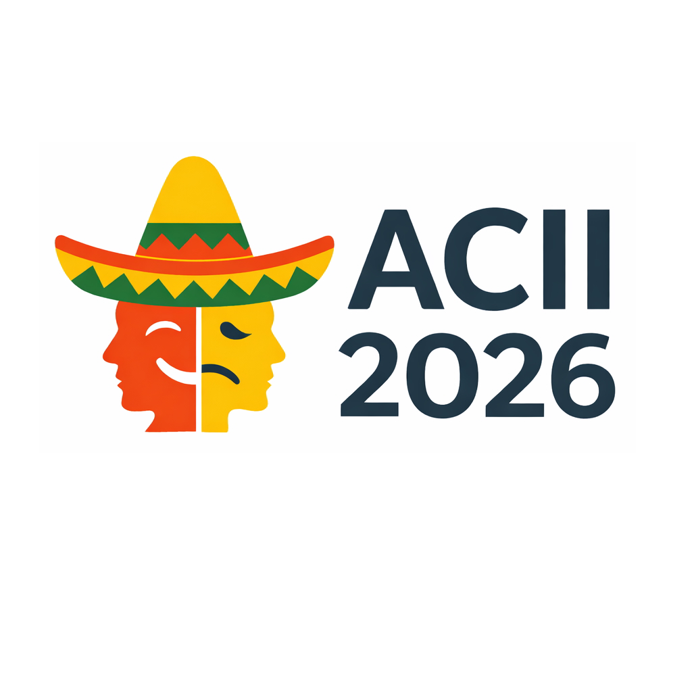 ACII 2026 | 2026/09/07–09/10
Puebla, Mexico開催日・開催地：公式確認済
現地日付・America/Mexico_City | Main Track 2026/04/24（延長後）；LBR 2026/06/28；Doctoral Consortium 2026/06/30資料記載・未再確認 | 公式サイト確認：2026/09/18
開催日・開催地 |
|---|
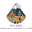 IVA 2026 | 2026/9/7-9/11
Puebla, Mexico資料記載・未再確認
開催地の現地日付（TZ未確認） | Full Paper要旨：2026/04/03 AoE；本論文：2026/04/10 AoE（延長後）；Posters：2026/06/22 AoE。時刻未確認上記日付：公式確認済 | 公式サイト確認：2026/09/18
締切日 |
|---|
| IUI 2027 | 2027/02/08–02/11
Helsinki, Finland開催日・開催地：公式確認済
現地日付・Europe/Helsinki | 要旨：2026/08/13 AoE 当日末；本論文：2026/08/20 AoE 当日末；Posters & Demos：2026/11/10 AoE 当日末上記日付：公式確認済 | 公式サイト確認：2026/09/18
開催日・開催地・締切日 |
|---|
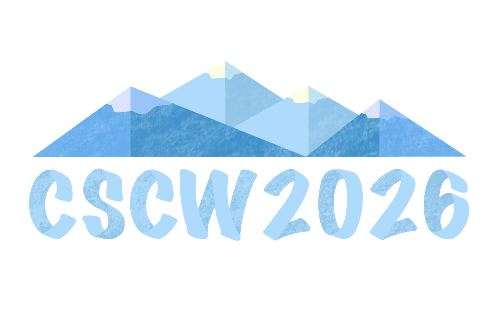 CSCW 2026 | 2026/10/10–10/14
Salt Lake City, USA開催日・開催地：公式確認済
現地日付・America/Denver | 2026 Posters 2026/05/15。2027年以降の論文受付方式は未確認資料記載・未再確認 | 公式サイト確認：2026/09/18
開催日・開催地 |
|---|
 UIST 2026 UIST 2026 | 2026/11/02–11/05
Detroit, USA開催日・開催地：公式確認済
現地日付・America/Detroit | Papers 要旨 2026/03/24；PDF 2026/03/31；Demos / Posters 2026/07/10資料記載・未再確認 | 公式サイト確認：2026/09/18
開催日・開催地 |
|---|
| UbiComp / ISWC 2026ACM SIGCHI | 2026/10/11–10/15
Shanghai, China開催日・開催地：公式確認済
現地日付・Asia/Shanghai | ISWC Notes & Briefs 2026/05/17；Posters & Demos 2026/05/23。IMWUTは別日程資料記載・未再確認 | 公式サイト確認：2026/09/18
開催日・開催地 |
|---|
 ACM Multimedia 2026 ACM Multimedia 2026 | 2026/11/10–11/14
Rio de Janeiro, Brazil開催日・開催地：公式確認済
現地日付・America/Sao_Paulo | 要旨 2026/03/25；Regular Paper 2026/04/01資料記載・未再確認 | 公式サイト確認：2026/09/18
開催日・開催地 |
|---|
| IEEE FG 2026 | 2026/5/25-5/29
Kyoto, Japan資料記載・未再確認
開催地の現地日付（TZ未確認） | Round 2 要旨・本論文：2026/01/25 AoE（延長後）。時刻未確認上記日付：公式確認済 | 公式サイト確認：2026/09/18
締切日 |
|---|
| Interspeech 2026 | 2026/9/27-10/1
Sydney, Australia資料記載・未再確認
開催地の現地日付（TZ未確認） | 投稿締切・投稿区分・時刻・TZは未確認資料の6月19日は投稿区分を再確認できないため確定締切として掲載しません。 | 公式サイト日程の再確認が必要 |
|---|
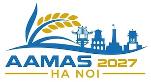 AAMAS 2027 | 2027/05/03–05/07
Hanoi, Vietnam開催日・開催地：公式確認済
現地日付・Asia/Ho_Chi_Minh | Main Track 要旨：2026/10/01；本論文：2026/10/08。時刻・TZ未確認上記日付：公式確認済 | 公式サイト確認：2026/09/18
開催日・開催地・締切日 |
|---|
 ICRA 2027 ICRA 2027 | 2027/5/24-5/28
Seoul, Korea資料記載・未再確認
開催地の現地日付（TZ未確認） | 投稿締切は未確認資料記載・未再確認 | 公式サイト日程の再確認が必要 |
|---|
 IROS 2027IEEE RAS IROS 2027IEEE RAS | 2027予定
未確認資料記載・未再確認
開催地の現地日付（TZ未確認） | 2027 Paper 2027/03/01資料記載・未再確認 | 公式サイト日程の再確認が必要 |
|---|
| ARSO 2026IEEE RAS | 2026/6/10-6/12
Vienna, Austria資料記載・未再確認
開催地の現地日付（TZ未確認） | Full / Position Paper 2026/01/22資料記載・未再確認 | 公式サイト日程の再確認が必要 |
|---|
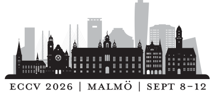 ECCV 2026 | 2026/9/8-9/13
Malmo, Sweden資料記載・未再確認
開催地の現地日付（TZ未確認） | Paper Registration 2026/02/26；Main Submission 2026/03/05資料記載・未再確認 | 公式サイト日程の再確認が必要 |
|---|
| ICCV 2027CVF | 2027/10/02–10/08
Hong Kong開催日・開催地：公式確認済
現地日付・Asia/Hong_Kong | 投稿締切は未確認資料記載・未再確認 | 公式サイト
開催日出典（CVF）確認：2026/09/18
開催日・開催地 |
|---|
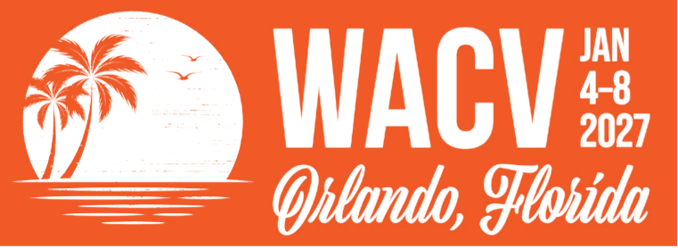 WACV 2027 | 2027/01/04–01/08
Orlando, Florida, USA開催日・開催地：公式確認済
現地日付・America/New_York | Round 1 登録 2026/06/19・本論文2026/06/26；Round 2 本論文2026/08/28資料記載・未再確認 | 公式サイト
開催日出典（CVF）確認：2026/09/18
開催日・開催地 |
|---|
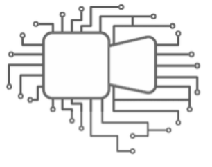 BMVC 2026 | 2026/11/23–11/26
Lancaster, UK開催日・開催地：公式確認済
現地日付・Europe/London | 投稿締切は未確認資料記載・未再確認 | 公式サイト確認：2026/09/18
開催日・開催地 |
|---|
 AAAI 2027AAAI | 2027/2/16-2/23
Montreal, Canada資料記載・未再確認
開催地の現地日付（TZ未確認） | 要旨 2026/07/21；本論文 2026/07/28資料記載・未再確認 | 公式サイト日程の再確認が必要 |
|---|
 NeurIPS 2026 NeurIPS 2026 | 2026/12予定
未確認資料記載・未再確認
開催地の現地日付（TZ未確認） | 要旨 2026/05/04；本論文 2026/05/06資料記載・未再確認 | 公式サイト日程の再確認が必要 |
|---|
 ICLR 2027 ICLR 2027 | 2027年・日程未確認
未確認資料記載・未再確認
開催地の現地日付（TZ未確認） | 投稿締切は未確認資料記載・未再確認 | 公式サイト日程の再確認が必要 |
|---|
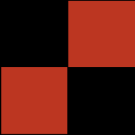 IJCAI 2026 | 2026/08/15–08/21
Bremen, Germany開催日・開催地：公式確認済
現地日付・Europe/Berlin | Main / Special Tracks 本論文：2026/01/19。要旨締切・時刻・TZ未確認上記日付：公式確認済 | 公式サイト確認：2026/09/18
開催日・開催地・締切日 |
|---|
| EMNLP 2026（ACL関連） | 2026/10/24–10/29
Budapest, Hungary開催日・開催地：公式確認済
現地日付・Europe/Budapest | ARR（長・短論文）：2026/05/25 23:59 AoE；EMNLP commitment：2026/08/02 23:59 AoE。ACLとは別日程上記日付：公式確認済 | 公式サイト確認：2026/09/18
開催日・開催地・締切日 |
|---|
| COLING 2027ACL | 2027/5/9-5/14
Macau, China資料記載・未再確認
開催地の現地日付（TZ未確認） | 投稿 2026/10/12（投稿方式・区分は未確認）資料記載・未再確認 | 公式サイト日程の再確認が必要 |
|---|
| LREC 2026 | 2026/05/11–05/16
Palma de Mallorca, Spain開催日・開催地：公式確認済
現地日付・Europe/Madrid | 投稿締切は未確認資料記載・未再確認 | 公式サイト確認：2026/09/18
開催日・開催地 |
|---|
| HCGシンポジウム 2026 | 2026/12/16-12/18
北九州国際会議場資料記載・未再確認
開催地の現地日付（TZ未確認） 公式トップに終了年の表記不整合あり。確定会期としては未確認。 | 投稿締切は未確認資料記載・未再確認 | 公式サイト日程の再確認が必要 |
|---|
| インタラクション 2027情報処理学会 | 2027/03/01–03/03
立命館大学 大阪いばらきキャンパス開催日・開催地：公式確認済
現地日付・Asia/Tokyo（JST） | 登壇発表：2026/10/26 23:59 JST；インタラクティブ発表（デモ・ポスター）：2026/12/25 22:00 JST上記日付：公式確認済 | 公式サイト確認：2026/09/18
開催日・開催地
発表募集・締切 |
|---|
| WISS 2026 | 2026/12/09–12/11
苗場プリンスホテル／新潟県開催日・開催地：公式確認済
現地日付・Asia/Tokyo（JST） | 登壇・国際学会招待：2026/08/31；デモ早期：2026/10/02・通常：2026/10/16・追加：2026/10/30。時刻・TZ未確認上記日付：公式確認済 | 公式サイト確認：2026/09/18
開催日・開催地
発表募集・締切 |
|---|
 RSJ学術講演会 2026日本ロボット学会 | 2026/09/01–09/04
金沢大学 自然科学本館開催日・開催地：公式確認済
現地日付・Asia/Tokyo（JST） | 論文投稿：2026/07/13 正午（延長後）。講演申込締切・TZ未確認上記日付：公式確認済 | 公式サイト確認：2026/09/18
開催日・開催地・締切日 |
|---|
| ROBOMECH 2026 | 2026/6/28-7/1
福岡国際会議場資料記載・未再確認
開催地の現地日付（TZ未確認） | 講演申込 2025/12/22；論文投稿 2026/03/09資料記載・未再確認 | 公式サイト日程の再確認が必要 |
|---|
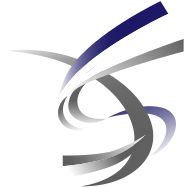 SI 2026 | 2026/12/08–12/10
グランキューブ大阪開催日・開催地：公式確認済
現地日付・Asia/Tokyo（JST） | 講演申込：2026/09/07（延長後）；予稿論文：2026/09/30。時刻・TZ未確認上記日付：公式確認済 | 公式サイト確認：2026/09/18
開催日・開催地・締切日 |
|---|
| 日本認知科学会 2026 | 2026/08/31–09/02
追手門学院大学 総持寺キャンパス開催日・開催地：公式確認済
現地日付・Asia/Tokyo（JST） | 一般発表申込 2026/04/24資料記載・未再確認 | 公式サイト確認：2026/09/18
開催日・開催地 |
|---|
| FIT 2026情報処理学会 | 2026/09/02–09/04
北九州学術研究都市・ハイブリッド開催日・開催地：公式確認済
現地日付・Asia/Tokyo（JST） | 講演申込 2026/06/01 15:00（延長後）資料記載・未再確認 | 公式サイト確認：2026/09/18
開催日・開催地 |
|---|
| CVIM研究会 2026情報処理学会 | 2026/11/26–11/27
同志社大学 新町キャンパス 尋真館開催日・開催地：公式確認済
現地日付・Asia/Tokyo（JST） | 2026年11月回 発表申込：2026/09/11；原稿：2026/10/15。時刻・TZ未確認。2027年1月・3月回は未定上記日付：公式確認済 | 公式サイト確認：2026/09/18
開催日・開催地・締切日 |
|---|
| PRMU研究会 2026連催CVIMの所属学会：情報処理学会 | 2026/11/26–11/27
同志社大学 新町キャンパス 尋真館（CVIMと連催）開催日・開催地：公式確認済
現地日付・Asia/Tokyo（JST） | 2026年11月連催回 発表申込：2026/09/11；原稿：2026/10/15。時刻・TZ未確認（共催CVIMの案内）上記日付：公式確認済 | 公式サイト
共催CVIMの公式案内確認：2026/09/18
開催日・開催地・締切日 |
|---|
| NLP年次大会 2026言語処理学会 | 2026/03/09–03/13
ライトキューブ宇都宮・オンライン開催日・開催地：公式確認済
現地日付・Asia/Tokyo（JST） | 発表申込・原稿提出：2026/01/09 15:00。TZ未確認上記日付：公式確認済 | 公式サイト確認：2026/09/18
開催日・開催地・締切日 |
|---|
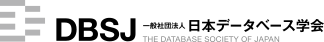 DEIM 2026日本データベース学会 | 2026/2/28-3/5
オンライン + 神戸資料記載・未再確認
開催地の現地日付（TZ未確認） | 論文投稿申込 2026/01/07（延長後）；予稿集論文 2026/02/11（最終原稿は別）資料記載・未再確認 | 公式サイト日程の再確認が必要 |
|---|
| IEICE HCS研究会 2026IEICE HCG | 2026/9月回など
回ごとに変動資料記載・未再確認
開催地の現地日付（TZ未確認） | 投稿締切は未確認資料記載・未再確認 | 公式サイト日程の再確認が必要 |
|---|
 IPSJ HCI研究会 2026–2027 IPSJ HCI研究会 2026–2027 | 2026/11/26–11/27（第220回）
ノートルダム清心女子大学開催日・開催地：公式確認済
現地日付・Asia/Tokyo（JST） | 各回の投稿締切は未確認。第221回：2027/01/20–01/21（石垣島）；第222回：2027/03/08–03/10（芝浦工業大学・ハイブリッド）上記開催日・開催地は公式掲載（企画中） | 公式サイト確認：2026/09/18
開催日・開催地 |
|---|